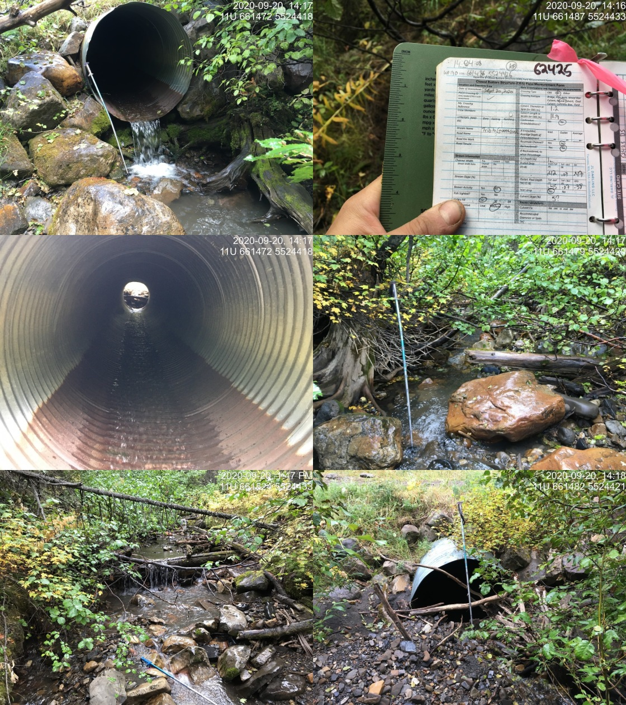

Appendix - Crossings 62425 and 62426
Spur - Grave Creek
Site Location
PSCIS crossings 62425 and 62426 are located on Grave Creek, approximately 75m and 185m upstream from where Grave Creek splits into two channels with the majority of flow originating from the other channel flowing from the south. Of note, the confluence of Grave Creek and the other channel is located approximately 175 to the west of where the confluence is mapped - likely due to a channel redirection approximately 375m upstream that appears to have occurred due to a large woody debris jam. Three PSCIS crossings (62427, 62428 and 62429) and one un-assessed modelled crossing (modelled ID 4601159) are located upstream of 62426 however, there are very minimal quantities of potential habitat upstream of their locations. Although mapped within the digital road atlas it is suspected that the road on which both culverts are located is a forest tenure road (Canfor Forest Products Ltd. tenure) as it is located immediately adjacent to another forest tenure road and within an area utilized for forestry.
Background
Grave Creek is known to contain westslope cutthrout trout, rainbow trout and bull trout downstream of the subject culverts and westslope cutthrout trout above (MoE 2020b). Two habitat confirmation assessments were conducted downstream on the mainstem of Grave Creek in 2014 at PSCIS crossings 62421 and 62422 (Masse Environmental Consultants Ltd. 2015). Although Heather Lamson - MoE Fisheries Biologist recommended the culverts not be removed to prevent potential hybridization of westslope cutthrout trout with stocked rainbow trout downstream (Masse Environmental Consultants Ltd. 2015), both structures had been replaced with bridges at the time of the surveys. Designs and remediations of these crossings were not recorded in PSCIS. Reassessments of these crossings were conducted by our team in 2020 and results will be loaded to PSCIS. In the field, Lotic Environmental Ltd. field teams were observed conducting two-pass closed site electrofishing in Grave Creek as part of a westslope cutthrout trout population assessment and aquatic monitoring program. Data from the program is uploaded to the Fisheries Information Summary System annually and is made available through the BC Data Catalog (MoE 2020b, 2020d).
PSCIS stream crossings 62425 and 62426 were ranked as moderate priorities for follow up with habitat confirmation due to the relatively large size of the stream network upstream (3.5km) and because they contained habitat rated as moderate value by VAST Resource Solutions Inc. (2013). The habitat confirmation was completed on September 20, 2020. A map of the watershed including areas surveyed is provided in Attachment 1 – Map 082G.124.
Stream Characteristics at Crossing
At the time of the survey, both culverts were un-embedded, non-backwatered and considered barriers to upstream fish passage. PSCIS crossing 62425 was 1.2m in diameter with a pipe length of 12m, a culvert slope of 7.5%, a stream width ratio of 3.1 and an outlet drop of 0.47m (Table 5.21). PSCIS crossing 62426 was 1.2m in diameter with a pipe length of 12m, a culvert slope of 5%, a stream width ratio of 2.9 and an outlet drop of 0.25m (Table 5.22). Water temperature was 8\(^\circ\)C, pH was 7.8 and conductivity was 370uS/cm.
Stream Characteristics Downstream of 62425
The stream was surveyed downstream from the culvert for 75m to where the stream joins the flow entering the valley from the south. Overall, total cover amount was rated as moderate with deep pools dominant. Cover was also present as small woody debris, large woody debris, boulders, undercut banks, and overhanging vegetation (Table 5.23, Figure 5.21). The average channel width was 3.7m, the average wetted width was 1.8m and the average gradient was 7.5%. The dominant substrate was cobbles with boulders subdominant. Downstream of the crossing there were frequent sections of gravels suitable for salmonid spawning and no barriers or obstacles to fish passage. Habitat was rated as high value for fry/juvenile salmonid rearing.
Stream Characteristics Upstream of 62425 and Downstream of 62426
The stream was surveyed upstream from 62425 for 170m to 62426. Overall, total cover amount was rated as moderate with deep pools dominant. Cover was also present as large woody debris and boulders (Table 5.23, Figure 5.22). The average channel width was 3.5m, the average wetted width was 2.1m and the average gradient was 5%. There were abundant gravels suitable for resident westslope cutthrout trout spawning throughout (Figure 5.23). Some debris jam steps to 0.8m in height were observed and there were approximately 15 westslope cutthrout trout (approximately 170mm long) in the outlet pool for crossing 62426. Habitat value was rated as high for fry/juvenile salmonid rearing.
Stream Characteristics Upstream of 62426
The stream was surveyed upstream from 62426 for 650m. Overall, total cover amount was rated as moderate with deep pools dominant. Cover was also present as boulders (Table 5.23, Figure 5.22). The average channel width was 3.5m, the average wetted width was 1.6m and the average gradient was 11.9%. This stream channel showed evidence of recent disturbance with eroding banks, multiple channels and aggraded sections throughout. Steps (0.6 - 0.9m in height) due to large woody debris debris jams were frequent throughout surveyed area and at a point approximately 200 m upstream of the road-stream crossing to the top end of the area surveyed, cover was limited to sporadic pools up to 0.3m deep. As mentioned previously, the historic channel was abandoned at 175m upstream of 62426 (UTM: 11 U 661748 5524558, Figure 5.23) with no flow observed within its banks. One of the tributaries that enters Grave Creek approximately 250m upstream of 62426 was accessed off of an adjacent spur road with a raped assessment conducted 250m upstream from the confluence with Grave Creek (UTM: 11U 662083 5524708). The average channel width at this location was 1.9m and the average gradient was 9%. Immediately upstream, the gradient in this tributary was 20% representing grades not likely passable for westslope cutthrout trout migrting upstream. Overall, habitat value upstream of 62426 within the mainstem of Grave Creek was rated as medium with moderate rearing potential for fry/juvenile westslope cutthrout trout.
Structure Remediation and Cost Estimate
Replacing PSCIS crossings 62425 and 62426 with bridges is recommended to provide access to the habitat located upstream. The costs are estimated at $125000 and $125000 respectively for a combined cost benefit of $15800/linear m and $27700/m2.
Conclusion
There is 0.2km of habitat upstream of crossing 62425 with habitat rated as high value for fry and juvenile salmonid rearing and another 1.8km upstream of 62426 rated as medium value. Although mapped only within the digital road atlas, it is suspected that the road on which both culverts are located is a forest tenure road (Canfor Forest Products Ltd. permit) as it is located immediately adjacent to another forest tenure road under permit to Canfor and within an area utilized for forestry. The crossings were ranked as moderate priorities for proceeding to design for replacement.
| Location and Stream Data |
|
Crossing Characteristics | – |
|---|---|---|---|
| Date | 2020-09-20 | Crossing Sub Type | Round Culvert |
| PSCIS ID | 62425 | Diameter (m) | 1.2 |
| External ID | NA | Length (m) | 12 |
| Crew | KP, AI | Embedded | No |
| UTM Zone | 11 | Depth Embedded (m) | NA |
| Easting | 661486 | Resemble Channel | No |
| Northing | 5524426 | Backwatered | No |
| Stream | Grave Creek | Percent Backwatered | NA |
| Road | Spur | Fill Depth (m) | 1 |
| Road Tenure | Canfor R08362 | Outlet Drop (m) | 0.47 |
| Channel Width (m) | 3.7 | Outlet Pool Depth (m) | 0.38 |
| Stream Slope (%) | 7.5 | Inlet Drop | Yes |
| Beaver Activity | No | Slope (%) | 7.5 |
| Habitat Value | Medium | Valley Fill | Deep Fill |
| Photos: From top left clockwise: Road/Site Card, Barrel, Outlet, Downstream, Upstream, Inlet. |
| Location and Stream Data |
|
Crossing Characteristics | – |
|---|---|---|---|
| Date | 2020-09-20 | Crossing Sub Type | Round Culvert |
| PSCIS ID | 62426 | Diameter (m) | 1.2 |
| External ID | NA | Length (m) | 12 |
| Crew | KP, AI | Embedded | No |
| UTM Zone | 11 | Depth Embedded (m) | NA |
| Easting | 661611 | Resemble Channel | No |
| Northing | 5524460 | Backwatered | No |
| Stream | Grave Creek | Percent Backwatered | NA |
| Road | Spur | Fill Depth (m) | 1 |
| Road Tenure | Canfor R08362 | Outlet Drop (m) | 0.25 |
| Channel Width (m) | 3.5 | Outlet Pool Depth (m) | 0.65 |
| Stream Slope (%) | 6 | Inlet Drop | Yes |
| Beaver Activity | No | Slope (%) | 5 |
| Habitat Value | Medium | Valley Fill | Deep Fill |
| Photos: From top left clockwise: Road/Site Card, Barrel, Outlet, Downstream, Upstream, Inlet. |
| Site | Location | Length Surveyed (m) | Channel Width (m) | Wetted Width (m) | Pool Depth (m) | Gradient (%) | Total Cover | Habitat Value |
|---|---|---|---|---|---|---|---|---|
| 62425 | Upstream | 170 | 3.5 | 2.1 | 0.3 | 5.0 | moderate | high |
| 62425 | Downstream | 75 | 3.7 | 1.8 | 0.3 | 7.5 | moderate | high |
| 62426 | Upstream | 650 | 3.9 | 1.6 | 0.4 | 11.9 | moderate | medium |
Figure 5.21: Typical habitat downstream of PSCIS crossing 62425.
Figure 5.22: Typical habitat upstream of PSCIS crossing 62425 and downstream of PSCIS crossing 62426.
Figure 5.23: Grave Creek redirection out of historic channel located upstream of PSCIS crossing 62426.